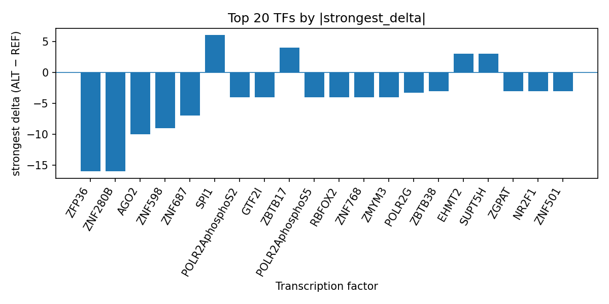

Author: snv-tf-researcher
We analyzed rs112938613 (chr15:89800805 G>A) for the blood level of tumor protein p53-inducible nuclear protein 1, a GWAS trait with a reported p value of 2 × 10^-54 and effect size of 0.15906642. The variant is annotated as an intron, non-coding transcript, upstream, downstream, and NMD transcript variant. Using AlphaGenome TF ChIP-seq prediction outputs, we prioritized transcription factor binding changes associated with the ALT allele. The strongest predicted decreases were observed for ZFP36, ZNF280B, AGO2, ZNF598, and ZNF687, while several factors including SPI1, ZBTB17, SUPT5H, EHMT2, GMEB1, REST, E2F1, and SUZ12 showed predicted increases. These computational results suggest that rs112938613 may alter local transcription factor occupancy in a directionally mixed manner. Because AlphaGenome provides computational predictions rather than experimental measurements, laboratory validation will be required to determine whether these predicted changes are biologically relevant.
Tumor protein p53-inducible nuclear protein 1 (TP53INP1) has been implicated in cellular growth regulation, including apoptosis-related processes, in experimental studies [1,2]. In one report, TP53INP1 protein was induced in response to combined pharmacologic inhibition of key signaling nodes and was associated with altered MYC and mTOR target gene expression [1]. In another study, TP53INP1 was described as part of a miR-93/miR-130b regulatory axis affecting proliferation and survival in HTLV-1-transformed cells [2].
In the present analysis, we evaluated a GWAS-associated SNV, rs112938613, for predicted changes in TF ChIP-seq binding using AlphaGenome. The candidate variant was selected by effect size, and therefore it may be in linkage disequilibrium with the true causal variant rather than representing the causal site itself. The goal was to prioritize transcription factor binding alterations that may help interpret the association signal for blood TP53INP1 levels.
We analyzed rs112938613 (G>A; chr15:89800805), which was reported for the trait “level of tumor protein p53-inducible nuclear protein 1 in blood.” The association information provided for this variant included p value 2 × 10^-54 and absolute beta effect size 0.15906642. Consequence annotations supplied for the locus were intron_variant, non_coding_transcript_variant, upstream_gene_variant, downstream_gene_variant, and NMD_transcript_variant. No nearest-gene assignments were provided.
AlphaGenome TF ChIP-seq outputs were used to compare ALT versus REF allele predictions across available tracks. These predictions are computational outputs, not experimental measurements. We summarized results at the TF level by inspecting the signed prediction deltas and retaining the strongest track per TF, along with counts of promoted and inhibited tracks. The workflow for variant selection, annotation, prediction summarization, literature retrieval, and manuscript assembly is summarized in the pipeline overview (Figure 1).
Figure 1. Workflow overview for the analysis pipeline. The figure summarizes the sequence from GWAS variant retrieval and filtering, through consequence annotation and AlphaGenome TF ChIP-seq prediction, to TF-level summarization and literature-supported manuscript generation.
Across the TF-level summary, the strongest predicted inhibition was observed for ZFP36 in K562 cells, with a delta of -16.0 (3 tracks total; 1 inhibited track). Other strongly inhibited TFs included ZNF280B in HepG2 (-16.0), AGO2 in HepG2 (-10.0), ZNF598 in HepG2 (-9.0), and ZNF687 in HepG2 (-7.0). Additional predicted decreases were seen for ZMYM3, ZNF768, POLR2AphosphoS5, RBFOX2, POLR2AphosphoS2, GTF2I, POLR2G, ZBTB33, ZNF501, NR2F1, ZBTB38, ZGPAT, ZNF143, CHD4, TBL1XR1, and NFKB2, among others.
Predicted increases were observed for SPI1 in HL-60, with a strongest delta of 6.0 across 4 tracks, as well as for ZBTB17 in HEK293 (4.0), ZNF580 in HEK293 (3.0), SUPT5H in K562 (3.0), EHMT2 in K562 (3.0), GMEB1 in K562 (2.5), REST in PFSK-1 (2.0), E2F1 in MCF-7 (2.0), and SUZ12 in MCF-7 (2.0). The remaining factors in the top summary showed mixed or limited-directionality effects, but the overall pattern was dominated by predicted inhibition in multiple ZNF-family and RNA-associated factors, alongside a smaller set of predicted gains.
The highest-magnitude TF effects are also presented in the run-level summary table, top_tf_effects.tsv, and are visualized in the rank-ordered delta plot (Figure 2). The plot highlights the signed strongest predicted ALT-versus-REF delta for each TF and provides a compact view of the directionally mixed signal.

Figure 2. Top transcription factor effects at rs112938613 based on AlphaGenome TF ChIP-seq predictions. Bars show the strongest signed ALT-versus-REF delta for each TF, with negative values indicating predicted inhibition and positive values indicating predicted promotion.
These predictions suggest that rs112938613 may influence a local regulatory context characterized by substantial TF-specific sensitivity to the ALT allele. The strongest predicted effects were inhibitory for several factors, including ZFP36 and multiple zinc-finger proteins, whereas a smaller number of factors, such as SPI1, E2F1, and REST, showed predicted increases. Such a directionally mixed profile may indicate that the variant perturbs multiple regulatory interactions rather than producing a uniform effect across all TFs.
The literature provided for this trait is consistent with TP53INP1 being biologically relevant to cell growth and apoptosis pathways [1,2]. Prior experimental work reported that TP53INP1 expression increased apoptosis in HTLV-1-transformed cells [2], and another study observed induction of TP53INP1 protein in the context of combined pathway inhibition in B-cell lymphoma models [1]. In that context, the present computational prioritization may help generate hypotheses about regulatory variation upstream of TP53INP1-associated biology, but it does not establish a mechanistic link.
Because AlphaGenome outputs are computational predictions, the TF occupancy changes reported here require experimental validation before any biological interpretation can be made. Assays such as allele-specific binding experiments or reporter-based approaches would be needed to test whether the predicted effects are observable in relevant cellular systems.
This analysis is limited by several factors. First, rs112938613 was selected by effect size and may be in linkage disequilibrium with the true causal variant, so the prioritized TF effects may not map directly to the causal signal. Second, AlphaGenome results are predictions rather than experimental measurements, and the present study cannot determine whether the predicted binding changes occur in vivo. Third, the top TF effects depend on the available track collection and the specific biosamples represented in the prediction set, so the summary may not capture all relevant regulatory contexts. Finally, no nearest-gene assignments were provided for this variant, limiting locus-level interpretation.
Katsuragawa-Taminishi Y, Mizutani S, Kawaji-Kanayama Y, Onishi A, Okamoto H, Isa R, et al. Triple targeting of RSK, AKT, and S6K as pivotal downstream effectors of PDPK1 by TAS0612 in B-cell lymphomas. Cancer Sci. 2023;114(12):4691-4705. PMID: 37840379. doi:10.1111/cas.15995
Yeung ML, Yasunaga J, Bennasser Y, Dusetti N, Harris D, Ahmad N, et al. Roles for microRNAs, miR-93 and miR-130b, and tumor protein 53-induced nuclear protein 1 tumor suppressor in cell growth dysregulation by human T-cell lymphotrophic virus 1. Cancer Res. 2008;68(21):8976-8985. PMID: 18974142. doi:10.1158/0008-5472.CAN-08-0769